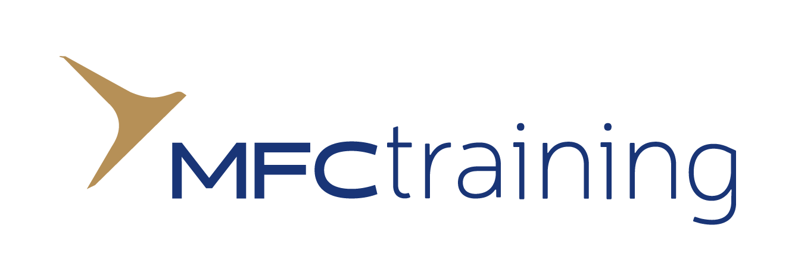
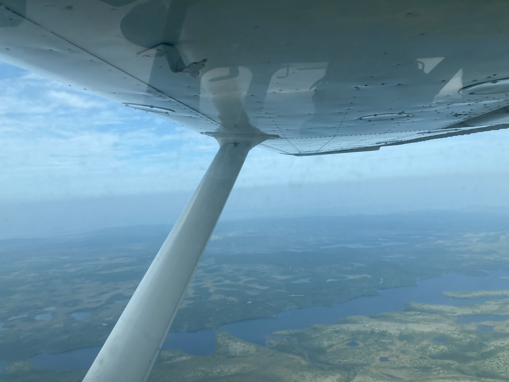
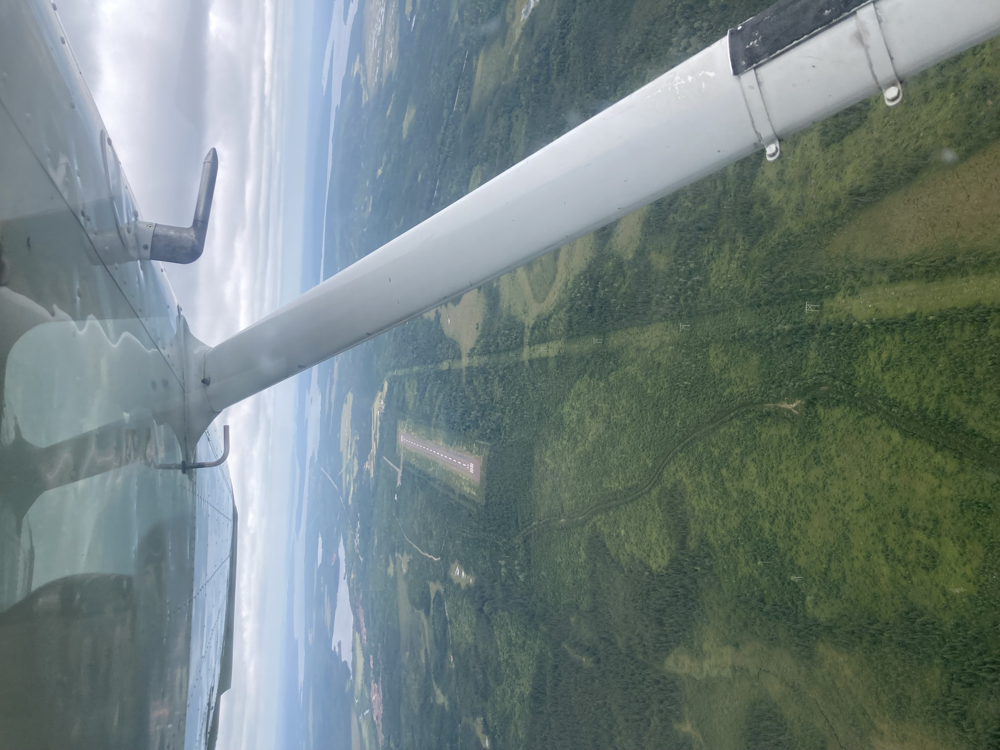

Aviation
The Beginnings
Since a young age, I was very lucky to be able to sit in many different commercial airplanes. I would always check in early to choose the window seat, as I would be intrigued of the moving surfaces on the wing. However, when I joined the cadet program with my elementry school friends, I wouldn't have known that I would be able to receive my wings through the program. In my level three/four year of the program, we were taught basic ground school (aviation lessons), as my excitement and passion for aviation began to grow rapidly. At the same time as this, I was looking at the uniforms of the senior cadets, when badges shaped like the wings stood out to me. Later did I know, these wings were awarded to cadets who completed the glider and power pilot training course - the greatest challenge for any air cadet to undergo.

Glider Pilot Training Course (Glider Pilot License)
At around 15 years old, I registered for the Moncton Flight College asynchronous ground school, the very first step of my Glider Pilot Training Course (GPTC) experience. Through Oct-Jan 2022, I dedicated 140+ hours into understanding Airframes, Systems, Theory of Flight, Meteorology, Flight Operations, Human Factors, Air Laws, Navigation and Radio Theory. With the large commitment, I was able to acheive a 98% on the final exam, scoring the highest mark in my whole squadron. After the ground school came the interviews - the interveiwers consisting of various Department of National Defense and Ontario Provincial Comitee Board Membeers - these two parties fund both GPTC and PPTC. It was such a shock when I received my acceptance email stating that I was one of the 30 out of 17,000 cadets in the central Canada region, representing the air cadets to take part of the GPTC.
The GPTC is a seven weeks long, intensive course, consisting of 15 hours of ground school, and six hours of flight time, with 20 takeoffs and landings. Throughout this course, I flew in the Schweizer SGS 2-33A glider. This course was held in Trenton Cadet Training Center, beside Canadian Forces Base Trenton, one of the largest military bases all over Canada. This course presented many challenges. Firstly, I was away from home for 20 times longer than my previous experiences, and this was my first cadet summer training course experience - living in a military base for the first time. However, I embraced the challenge: my classmates that I have just met for a day became my best companions for the seven weeks.

 ]
] Flying gliders requires a large amount of spatial awareness and multitasking. As gliders do not have an engine, the pilot must confidently judge how far they can be from a landing field, at a certain altitude. This skill is known as flight management. Flight management is especially crucial when a glider begins their approach on landing, as they must preform certain maneuvers to meet predetermined altitudes in the circuit patterm, to ensure that the glider will land at the ideal landing spot. While maintaining flight management, a glider pilot must also make their position radio calls, maintain a specified speed, and preform other manuevers (e.g. turns), which require the skill of multitasking. Through these seven weeks, I have developed a greater spatial awareness due to flight management, and have improved my multitasking skills. Because of this, I received my glider wings at the end of the 2023 summer. Additionally, I was awarded with the 8 Wing Trenton Commanding Officer's Coin for my hard work and dedication through the seven weeks.


After completing the GPTC, I have planned to give back to the program by volunteering at local cadet flying sites, Markham and Borden CFS, enabling the newer cadets to expereince flying in a glider. Every few weekends, I dedicate my time to inspect gliders in the morning, give glider tours, preform safety breifings, help out with the ground crew, and also cleaning the site at the end of the day.
Power Pilot Traning Course (Power Pilot License)
The Power Pilot Traning Course is another 7 week long and intensive course, held in Gander, Newfoundland, through Gander Flight Training. Throughout this course, I flew the Cessna 152 (single engine) airplane. The ground school portion was similar to that of the glider pilot training course, except that it emphasized on the complex engine, fuel and the electrical systems. To get my private pilot license, I would have to complete a minimum of 40 hours of groundschool, 45 hours of flight time, including 17 hours of dual instruction and 12 hours of solo time. This requirement includes 5 hours of solo cross country, in which I have to travel 150 nauticle miles (~300 km) and stopping at 2 airports along the way.

Personally, I found the PPTC to be much more challenging than the GPTC. In this course, I experienced my first solo flight on my 13 flight, with approximately 10 hours of flight time. I also completed my cross country in the next month, in which the route was from Gander International Airport (CYQX), to Deer Lake Regional Airport (CYDF) to Exploits Valley Airport (CCP2). Additionally, it was crucial that we used our radio to locate nearby traffic, including the other C152/C172s, other airline airplanes (e.g. PAL), and military helicopters/airplanes.


In addition to that, we would have to plan navigation logs for the cross country flights (landing and taking off at different, unfamiliar airports). In these nav logs, we would calculate our cruising altitude (based on weather and airspace regulations), our airspeed (based on the air pressure, temperature, and aircraft performance), our heading (based on our maps, any crosswind, and airspeed), our groundspeed (based on head/tailwind a/c performance and distance), and finally, our fuel burn (based on the groundspeed, time and fuel burn). In addition to that, we would learn how to fill out VFR flight plan/itineraries with the flight information centers, and the weight and balance (using aircraft performance charts). Many of these skills required the knowledge of various math formulas (pressure/density altitude, moment formula, etc.), and aircraft performance charts (requires precision).
 
Throughout the next few years, I plan to keep my Power Pilot License current, by flying every few months at nearby airports. I am really looking forward to taking my family and friends up in the sky, so that I can share my knowledge and the world of aviation to others.